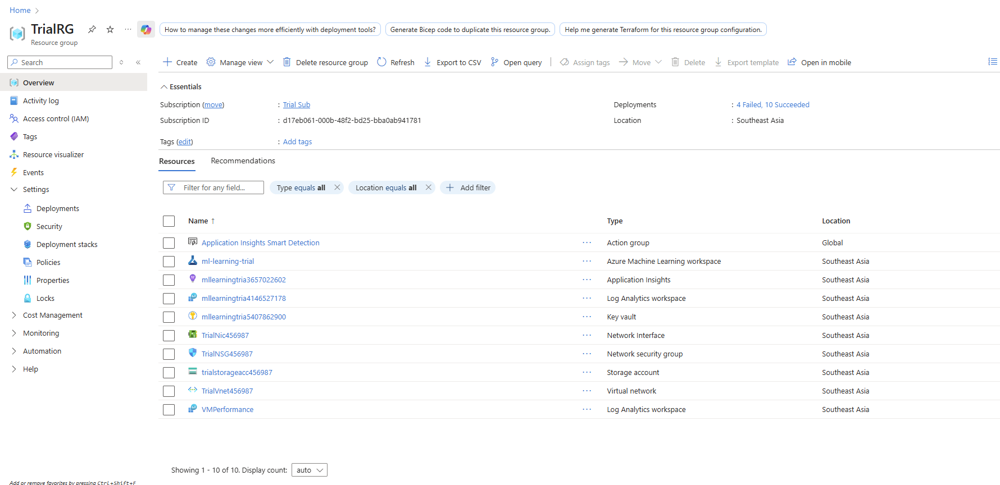
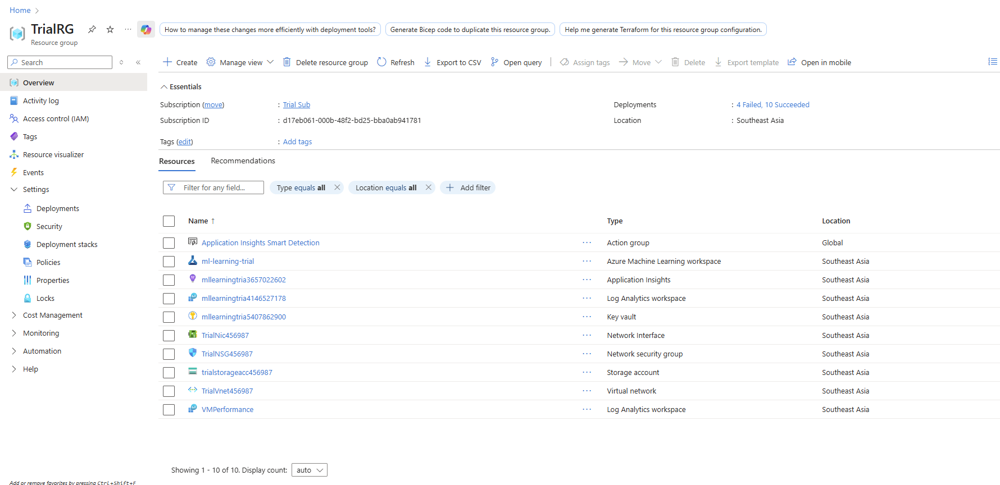

Projects
Azure Infrastructure with IaC
 

Deployed Azure resources using Infrastructure as Code (Bicep). Provisioned VMs, networking components, and storage accounts with parameterized templates alongside integration with Github Actions CI/CD pipeline
Technologies Used: Bicep, Azure, GitHub Actions
myReno – Home Decoration Portal
A centralized workspace for clients and designers to collaborate on home decoration projects. Built using Laravel and Node.js, and hosted on Fly.io. Includes features like PDF generation, real-time messaging, and a demo payment gateway using Stripe.
Technologies Used: Laravel, Node.js, Fly.io, Stripe
ReportTruzz
A web application for community members to report infrastructure damages, designed to foster collaboration with local authorities.
Technologies Used: PHP, JavaScript, Laravel
PDKP - Booking System
A web application for community of Jitra, Kedah to be able to book event and sport halls under jurisdiction of Pejabat Daerah Kubang Pasu
Technologies Used: Pure PHP, JavaScript, CSS
Mart4U – Ecommerce Web Application
Mart4U is an ecommerce platform designed for small-scale mart owners to manage stock, and handle online payments effectively.
Technologies Used: Laravel, Stripe, MySQL
Chaos Ascendance – 2D Turn-Based Game
A 2D turn-based game developed using Java. Engage in strategic gameplay in a fantasy world.
Technologies Used: Java, JavaFX
Tomato Hunter – VR Game
A VR game developed using Unity and Pico 4 VR headset. Immerse yourself in the world of Tomato Hunter as you explore and conquer levels in virtual reality.
Technologies Used: Unity, C#, Pico 4 VR
Predictive Models
Predictive models of Anuran Species using Decision Tree, KNN, Neural Network and and XG Boost
Technologies Used: Juypter Notebook, Adobe, Python
Other Projects
- Young Bluds – Short animation animated using Blender.
- Smart Pet Cage – IoT-based pet cage using Vitrox V-One and Cytron Maker Feather esp32 microcontroller.